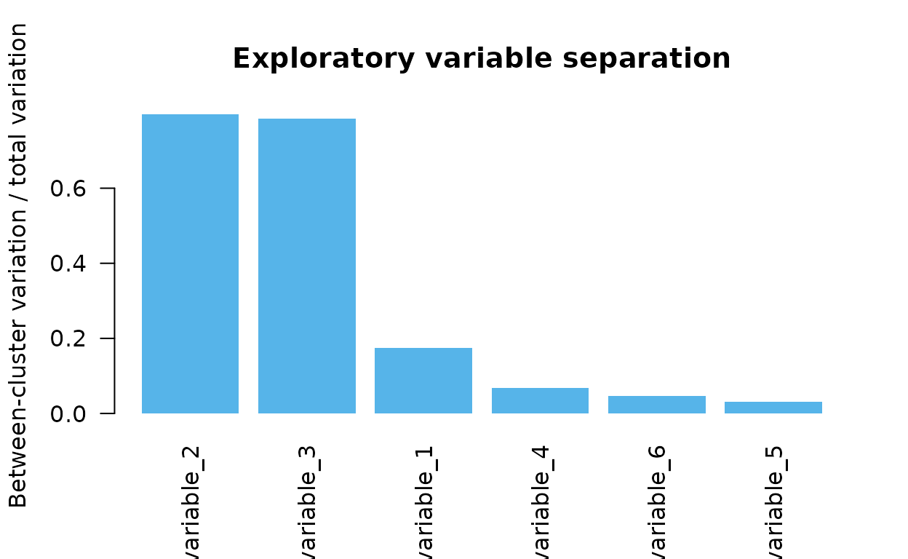
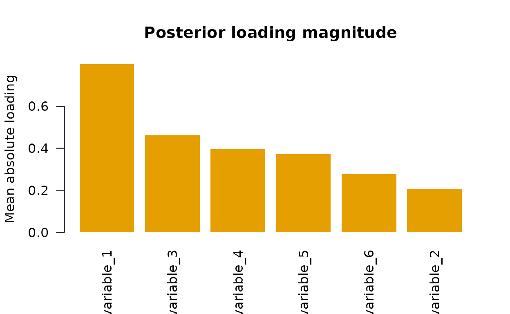

Exploratory variable prioritization after bpgmm clustering
Source:vignettes/variable-prioritization.Rmd
variable-prioritization.Rmdbpgmm performs Bayesian model selection for the number
of clusters and PGMM covariance structure. It does not currently
implement a formal spike-and-slab or inclusion-indicator
variable-selection prior. Still, users often want to understand which
observed variables help explain the fitted clustering.
This vignette shows a practical exploratory workflow:
- fit
bpgmm; - summarize the posterior modal allocation;
- rank variables by between-cluster separation;
- compare that ranking with posterior loading magnitudes.
These summaries are diagnostic and exploratory. Treat them as variable prioritization, not as formal posterior variable inclusion probabilities.
Simulate data with informative and weak variables
The first three variables carry most of the cluster separation. Variables four through six are noisier and less cluster-specific.
library(bpgmm)
#> bpgmm 1.3.0 loaded. If you use bpgmm in published work, please cite it with citation("bpgmm").
simulate_screening_data <- function(n_per_cluster = 20, p = 6, q = 2) {
means <- rbind(
c(-3.0, -2.0, 0.0, 0, 0, 0),
c( 2.5, -1.0, 2.0, 0, 0, 0),
c( 0.0, 2.5, -2.0, 0, 0, 0)
)
lambdas <- list(
matrix(c(1.2, 0.5, 0.2, 0, 0, 0,
0.0, 0.2, 0.8, 0.3, 0, 0), nrow = p),
matrix(c(0.2, 1.1, 0.6, 0, 0, 0,
0.8, 0.1, 0.2, 0.6, 0, 0), nrow = p),
matrix(c(0.7, -0.4, 1.0, 0, 0, 0,
-0.2, 0.8, 0.4, 0.3, 0, 0), nrow = p)
)
psi <- list(
diag(c(0.25, 0.35, 0.30, 0.80, 0.90, 1.00)),
diag(c(0.30, 0.25, 0.40, 0.80, 0.90, 1.00)),
diag(c(0.35, 0.30, 0.25, 0.80, 0.90, 1.00))
)
n <- n_per_cluster * 3
X <- matrix(NA_real_, nrow = p, ncol = n)
true_cluster <- rep(seq_len(3), each = n_per_cluster)
column <- 1
for (k in seq_len(3)) {
for (i in seq_len(n_per_cluster)) {
latent_score <- rnorm(q)
noise <- MASS::mvrnorm(1, mu = rep(0, p), Sigma = psi[[k]])
X[, column] <- means[k, ] + lambdas[[k]] %*% latent_score + noise
column <- column + 1
}
}
rownames(X) <- paste0("variable_", seq_len(p))
list(X = X, true_cluster = true_cluster)
}
set.seed(2028)
sim <- simulate_screening_data()
X <- sim$X
true_cluster <- sim$true_clusterFit a short model-selection chain
fit_log <- capture.output({
fit <- pgmm_rjmcmc(
X = X,
m_init = 3,
m_range = c(1, 5),
q_new = 2,
burn = 2,
niter = 6,
constraint = "UUU",
m_step = 1,
v_step = 1,
verbose = FALSE
)
})
tail(fit_log, 1)
#> character(0)
fit_summary <- summarize_pgmm_rjmcmc(fit, true_cluster = true_cluster)
fit_summary$ari
#> [1] 0.5510244Rank variables by posterior allocation separation
One simple score is the fraction of total variation explained by the posterior modal clusters:
This is not a Bayesian variable-selection posterior. It is a compact way to ask which observed variables separate the fitted clusters.
cluster_separation <- function(X, allocation) {
vapply(seq_len(nrow(X)), function(j) {
x <- X[j, ]
overall <- mean(x)
total <- sum((x - overall)^2)
between <- sum(vapply(split(x, allocation), function(group) {
length(group) * (mean(group) - overall)^2
}, numeric(1)))
if (total == 0) 0 else between / total
}, numeric(1))
}
separation <- cluster_separation(X, fit_summary$allocation)
separation_table <- data.frame(
variable = rownames(X),
separation = round(separation, 3)
)
separation_table[order(separation_table$separation, decreasing = TRUE), ]
#> variable separation
#> 2 variable_2 0.796
#> 3 variable_3 0.786
#> 1 variable_1 0.174
#> 4 variable_4 0.068
#> 6 variable_6 0.046
#> 5 variable_5 0.031
ordered <- order(separation, decreasing = TRUE)
barplot(
separation[ordered],
names.arg = rownames(X)[ordered],
las = 2,
col = "#56B4E9",
border = NA,
ylab = "Between-cluster variation / total variation",
main = "Exploratory variable separation"
)
Compare with loading magnitudes
The loading matrices describe how observed variables relate to latent factors inside each component. A simple posterior diagnostic is the average absolute loading magnitude across saved samples and active components.
loading_importance <- function(fit) {
totals <- NULL
count <- 0
for (sample_id in seq_along(fit$lambda_samples)) {
lambdas <- fit$lambda_samples[[sample_id]]
active <- which(fit$active_cluster_samples[[sample_id]] == 1)
for (k in active) {
lambda <- lambdas[[k]]
if (!is.matrix(lambda)) {
next
}
score <- rowMeans(abs(lambda))
if (is.null(totals)) {
totals <- numeric(length(score))
}
totals <- totals + score
count <- count + 1
}
}
if (count == 0) {
return(rep(NA_real_, nrow(X)))
}
totals / count
}
loading_score <- loading_importance(fit)
loading_table <- data.frame(
variable = rownames(X),
mean_abs_loading = round(loading_score, 3)
)
loading_table[order(loading_table$mean_abs_loading, decreasing = TRUE), ]
#> variable mean_abs_loading
#> 1 variable_1 0.644
#> 2 variable_2 0.478
#> 3 variable_3 0.392
#> 4 variable_4 0.321
#> 6 variable_6 0.235
#> 5 variable_5 0.128
ordered_loading <- order(loading_score, decreasing = TRUE)
barplot(
loading_score[ordered_loading],
names.arg = rownames(X)[ordered_loading],
las = 2,
col = "#E69F00",
border = NA,
ylab = "Mean absolute loading",
main = "Posterior loading magnitude"
)
Interpretation
Use both summaries together:
- high separation means a variable distinguishes the posterior clusters;
- high loading magnitude means a variable contributes to latent-factor covariance structure inside components;
- disagreement between the two summaries is useful and should be inspected.
For formal variable selection, the model would need an explicit variable inclusion prior and posterior inclusion summaries. The current package is best described as supporting model-based clustering, cluster-number selection, and PGMM covariance-structure selection, with exploratory variable prioritization available from posterior outputs.
Suggested reporting language
When using these summaries in a manuscript or analysis report, use wording such as:
We ranked variables by their separation across posterior modal clusters and by posterior loading magnitudes. These rankings are exploratory diagnostics derived from the fitted clustering model, not posterior inclusion probabilities.
Avoid wording such as “selected variables” unless a formal variable-selection model has been fitted. A careful distinction makes the package easier to use correctly and avoids overstating the statistical target.